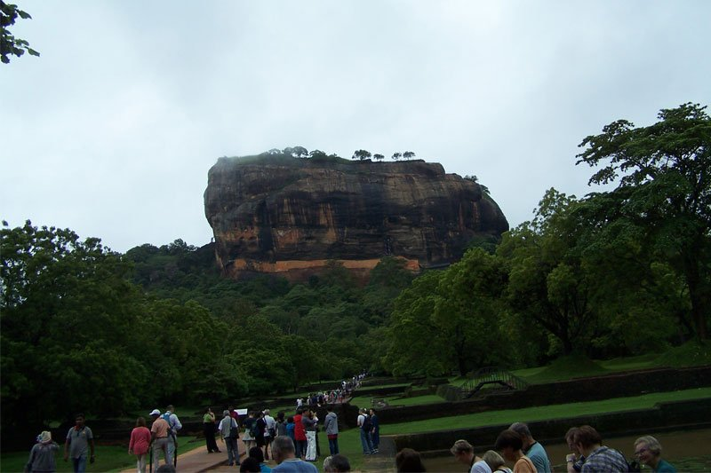
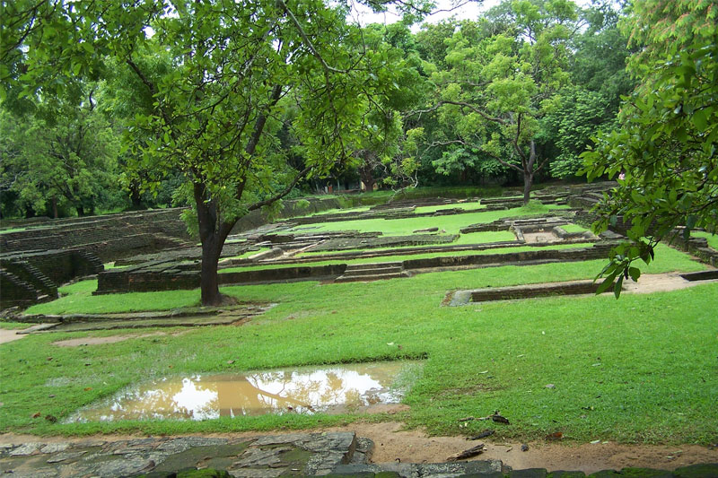
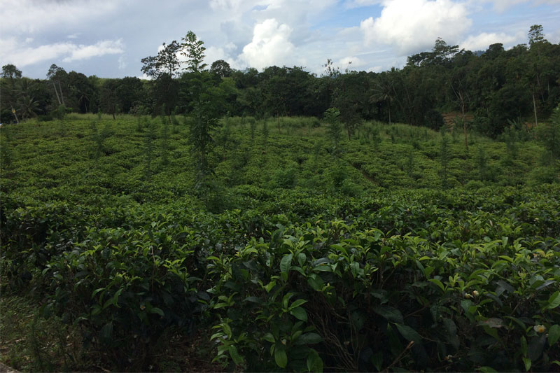

Vienas populiariausių gamtos paminklų Šri Lankoje yra vidury džiunglių iškilusi Sigirijos platforma, kurios viršuje karalius Kasyapa buvo pasistatęs rūmus su didžiuliais sodais, baseinais, kanalais, alėjomis ir fontanais. Nors šiandien gali pamatyti tik viso to liekanas, turistai vis tiek lipa aukštyn. Ir, kaip pasakoja Aleksandra, lipa sunkiai – turėklų nėra, laiptai siauri, net su 36–37 batų dydžiu, koją turi statyti kampu. Be to lipdamas nesustosi pailsėti kada panorėjęs – iš paskos plūstantys turistai stumia į priekį. Aleksandra prisipažįsta nesanti sportininkė, sako buvo sunku, bet žiauriai patiko, nes įveikė save. Jei vis dėlto nelabai pasitikite savo jėgomis, galite užsisakyti vietinio siūlomą pagalbą – laikymą už rankos lipimo metu. „Fiksuotos kainos nėra, arbatpinigių gali palikti kiek nori, bet jeigu duosi jų manymu per mažai, nebus patenkinti“ – sako Aleksandra, kuri pagalbos atsisakė ir lipo pati.

Aleksandrai ir jos kompanionams ne visai pasisekė, nes į programą nebuvo įtrauktas pagrindinių plantacijų kalnuose lankymas. Kaip žinia, kuo aukštesnis kalnas, tuo geresnė ir kokybiškesnė arbata, nes augalai gauna daugiau drėgmės ir saulės. Kaip auga žemesnių kalnų arbata (sakoma, tokia skirta atsainesniam arbatos gėrėjui) visi pamatė sustojus kažkur pakeliui. Tik išlipus, prie Aleksandros ir kitų pribėga gėles kišančios ir pinigų už tai prašančios moteriškės. Arbatos rinkėjų darbas sunkus ir mažai apmokamas, tad kodėl nepabandžius užsidirbti papildomai – juk europiečiai jiems atrodo milijonieriai! Mums vienas euras tėra menkas pinigėlis, o jiems tai trečdalis viso dienos atlygio. Žinoma, 600 Šri Lankos rupijų (2,95 Eur) gauni jei per dieną prirenki nustatytą 18 kg arbatos lapelių kvotą, jei ne, uždirbsi per pus mažiau. Jauni, ką tik išaugę arbatos pumpurai nurenkami vieną kartą per savaitę, senų, peraugusių lapų nerenka – jie netinkami. Arbatos krūmų lygis palaikomas perteklių nurėžiant specialiu lenktu peiliu – jeigu krūmo neprižiūrėsi, išaugs aukštas kaip medis. Įdomu tai, kad tiek juoda, tiek žalia arbata renkama nuo to paties krūmo, skiriasi tik vėlesnis apdorojimo būdas. Kuo mažesnis arbatos grūdelis, tuo stipresnė arbata.

Nors Šri Lanka laikoma turtingesne šalimi už Indiją, Bangladešą, Nepalą, dar keletą Azijos bei daugelį Afrikos šalių, neturto apraiškų toli ieškoti nereikia. Sustoję nusipirkti vaisių pakelės palapinėje lietuviai ir latviai susidūrė štai su tokia situacija: dirba du vaikai – maždaug dešimties metų berniukas ir jaunesnė mergaitė. Angliškai abu kalba sunkiai, tačiau moka pagrindinius žodžius – money, five, ten ir pan. Renkantis vaisius, mergaitė priena prie kiekvieno ir tyliu plonu balseliu šnabžda – pen, pen. Kol visi galvoja ko ji nori, gidas paaiškina, kad vaikui reikia tušinuko, nes Šri Lankoje tai laikoma prabanga. „Būtum mačiusi, kokia laiminga ji buvo, kaip šypsojosi gavusi pora tušinukų“ – prisimena Aleksandra.

Tropinėje, Lietuvos dydžio saloje plyti ne tik arbatos plantacijos, bet ir prieskonių sodai (Spice Gardens), su juose auginamu cinamonu, pipirais, gvazdikėliais, kalendromis ir kitais puikiais dalykais. Aleksandra pasakoja, kad po ekskursijos pakviestas užeiti iš prieskonių ir vaistažolių gaminamų liaudies medicinos priemonių parduotuvėlę gali rasti įdomių dalykų. Viskas brangu, o tariamas efektyvumas europiečiams dažnu atveju tik kelia abejonių. Pavyzdžiui, čia gali įsigyti plaukų šalinimo kremo (užtenka užtepti norint atsikratyti nepageidaujamų kūno plaukų), kakavos gėrimo, kurio kasdien išgėrę prieš miegą, nebeknarksite ar sirupo, kurio kasdien išgėrę du kartus po valgių, nustosite prakaituoti. Dar viena atrakcija, kurią prisimena Aleksandra yra preparatų pristatymo metu į salę įeinantys masažuotojai, kurie turistams pradeda daryti galvos, rankų, pečių ir kojų masažą. Fiksuotos atlygio kainos nėra, pats turi įvertinti savo masažuotoją, tačiau kol nesumokėsi, šalia stovės kaip įbesti.